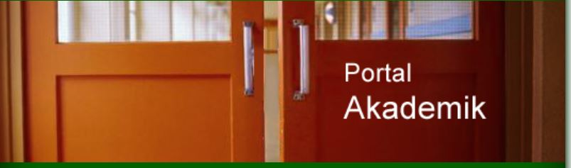

Untuk Kedjajaan Bangsa
Selamat datang di Portal Universitas Andalas. Masuk dengan akun institusi Anda untuk mengakses layanan perkuliahan, registrasi administrasi, entri nilai, dan integrasi informasi akademik lainnya.
Autentikasi terenkripsi dan aman untuk menjaga privasi data kemahasiswaan dan kepegawaian Anda.
Layanan pengumuman akademik terpadu dan akses entri nilai terpusat di satu dashboard.
© 2026 Universitas Andalas. Lembaga Pengembangan Teknologi Informasi & Komunikasi (LPTIK).
unand.ac.idUntuk Kedjajaan Bangsa
Silakan masuk menggunakan akun identitas resmi (NIM/NIP) Anda.
⚠️ Hanya untuk Portofolio. Kunjungi web resmi di portal.unand.ac.id

© 2026 Universitas Andalas. Lembaga Pengembangan Teknologi Informasi & Komunikasi (LPTIK).
www.unand.ac.idHarap masukkan nama lengkap Anda untuk kemudahan personalisasi sesi portofolio akademik ini.